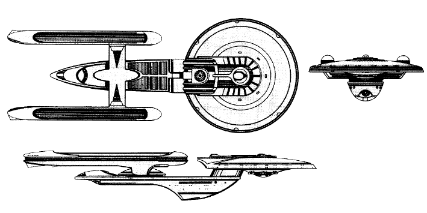

Excelsior-class Battleship (UFP)

Battle Stats
Engines and Superstructure
Total Power Units - 108 (Warp Drive - 2x38, Impulse - 32)
MPR - 6/1
Superstructure - 38
Maximum Warp - 3
Industry Points to Build - 10
Beam Weapons (Phasers)
Max Power - 10
Firing Chart - Y
Arcs - 2F, 2P, 2S, 2A
Bonuses - +3(1-10) +2(11-17) +1(18-20)
Beam Weapons (Phasers)
Max Power - 5
Firing Chart - T
Arcs - 4P, 4S
Bonuses - +2(1-8) +1(9-16)
Missile Weapons (Photon Torpedoes)
Power to Arm - 1
Damage - 20
Firing Chart - S
Arcs - 2F, 2A
Deflector Shields
Max Shield Power - 20
SPR - 1/4